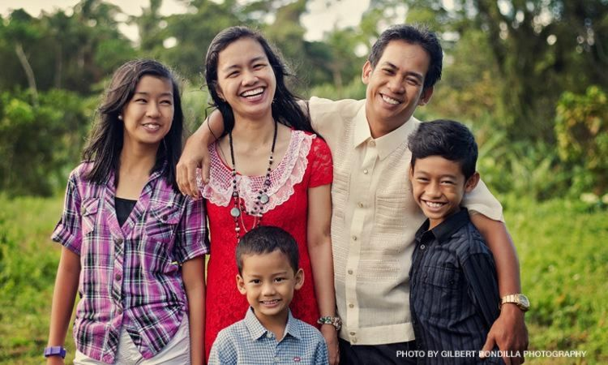

Good News > PH ranks 2nd happiest country in Southeast Asia in 2022 World Happiness Report.
Author: CNN Philippines Staff | March 21, 2022
Metro Manila (CNN Philippines, March 21) — The Philippines is the second happiest country in Southeast Asia, according to the 2022 World Happiness Report.
The country ranked 60th out of 146 countries, a small improvement from 61st spot last year. The Philippines garnered a score of 5.904 this year.
The report published by the United Nations Sustainable Development Solutions Network showed Singapore topped Southeast Asian countries at 27th spot with a score of 6.480.
Other Southeast Asian countries in the list are: Thailand (61st), Malaysia (70th), Vietnam (77th), Indonesia (87th), Laos (95th) Cambodia (114th), and Myanmar (126th). Brunei, also part of the 10-member Association of Southeast Asian Nations, was not included
“The most remarkable change seen during COVID-19 has been the global upsurge in benevolence in 2021. This benevolence has provided notable support for the life evaluations of givers, receivers, and observers, who have been gratified to see their community’s readiness to reach out to help each other in times of need,” the report read.
“In every global region, there have been large increases in the proportion of people who give money to charity, help strangers, and do voluntary work in every global region," it said. The future of happiness will depend on the pandemic situation and the scale of military conflict, it added.
For the fifth straight year, Finland remains as the happiest country in the world with a score of 7.821. Meanwhile, Afghanistan is at the bottom of rankings with a score of 2.404.
The World Happiness Reports measures happiness “based on life evaluations as the more stable measure of the quality of people's lives.”
The happiness of each country can also be explained through different factors such as gross domestic product per capita, social support, healthy life expectancy, personal freedom, and perceptions of corruption.
Tweet this article
"News That Hits Home, Hundred Stories, One Truth"
Copyright © Calacday & Escanilla News 2022. All Rights Reserved.